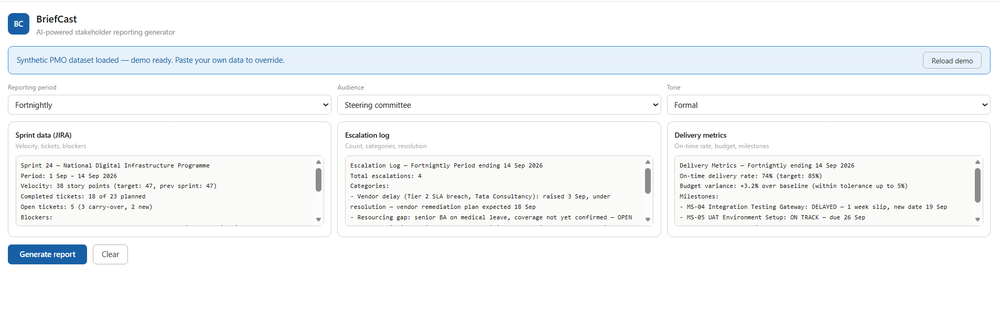
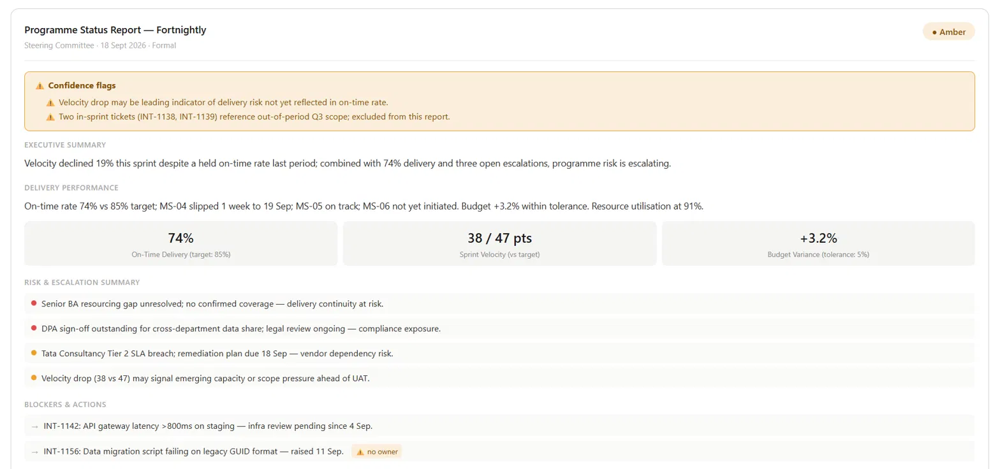

A React tool that takes JIRA sprint exports, escalation logs, and delivery metrics and generates structured, audience-tuned leadership reports — with an interpretive layer that surfaces patterns the data implies, not just what it states.


In a live programme, the difference between a Steering Committee report that lands and one that doesn't isn't the data — it's the interpretation. Velocity dropped 20% but on-time rate held? That's a leading indicator of capacity risk, not a clean week. A tool that just reformats data leaves that pattern invisible.
Most reporting generators are formatters. BriefCast is built around the idea that the interpretive layer — the pattern recognition a senior PM applies before writing — is where the actual value is.
Three raw data sources (sprint export, escalation log, delivery metrics) plus three context dropdowns (period, audience, tone) go into a single Claude API call. The output isn't a formatted version of the input — it's a structured report that surfaces what the data implies, tuned to the governance register of the audience selected.
Where the data is ambiguous or incomplete, the AI flags it with a ⚠️ marker rather than presenting a guess as a conclusion. Human-in-the-loop by design, not by accident.
PMO reporting isn't just a writing task. A Red RAG status circulated to a Steering Committee has real downstream effects. Each guardrail is a decision point, not a warning label.
If any of the three input sources is empty or sparse, the tool warns before generating — not after. A report that looks complete but isn't is worse than no report.
If input data references work outside the declared reporting period, it's flagged and excluded rather than silently included. Keeps the report period-accurate without manual review.
If the AI assigns Red but input data is ambiguous, the report pauses and asks the user to confirm or override before finalising. Red is never set silently.
C-suite selected but sprint data contains technical detail? The tool flags the mismatch before finalising, so the right level of abstraction reaches the right room.
Every generated report carries a timestamp and a hash of the input data — a traceable answer to "what data did this report come from?" Critical in any governance-accountable programme context.
Sprint velocity dropped 19% against target (38 vs 47 story points). On-time delivery rate: 74% vs 85% target — lagging but stable. A formatter reports both numbers. BriefCast's executive summary flags the velocity drop as a leading indicator of capacity risk not yet visible in milestone status, and marks the interpretation with ⚠️ because it's a single-sprint sample — insufficient to confirm a systemic trend.
The same AI call also produced two confidence flags on the synthetic dataset: one on the velocity trend (single data point, not enough to call a pattern), one on MS-06 Stakeholder Signoff Draft (19 days to due date, not started — no progress signal available to assess risk). Both are surfaced in the report, not buried or dropped.
Data completeness check and scope creep detection run client-side before any API call is made. These are deterministic checks — the AI doesn't decide whether data is missing or out-of-period.
All three input sources plus context dropdowns go to claude-sonnet-4-6 with a system prompt that instructs: interpret patterns unprompted, flag ambiguity with ⚠️, adapt tone strictly to audience, and return structured JSON for all five report sections.
If the API returns "rag": "Red" and "ragAmbiguous": true, the UI intercepts before rendering the report and presents a confirmation dialog. The report only finalises once a human has reviewed and decided.
After generation, if C-suite audience is selected, the raw input is checked for technical implementation detail. A mismatch flag is surfaced before the user sees the report — not embedded in it.
Timestamp and an 8-character hex hash of the concatenated input data are computed client-side and attached to every report. These are always accurate — no risk of the AI fabricating provenance.
RAG status, five-section structure, audience-tuned tone — the report format is the format a Steering Committee or C-suite actually receives in a live programme.
The interpretive layer is built to surface the velocity–on-time rate divergence pattern specifically, because that's the kind of signal a senior PM reads before writing the exec summary.
The RAG Red confirmation, no-owner flagging, and DPA sign-off tracking in the demo dataset all reflect real programme risk management discipline, not illustrative invention.
Each of the five guardrails was specced before any code was written — because in a governance context, the failure modes of an AI reporting tool are as important as its outputs.